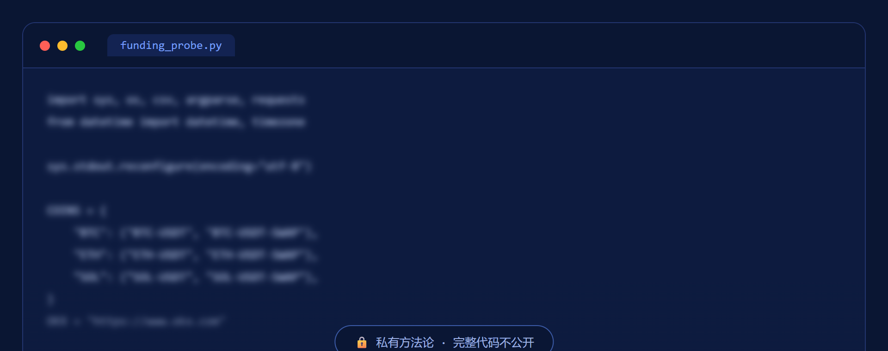

用毒辣的套利视角审视任何币/理财机会给出盈亏比，配免 key 的资金费率/基差/持仓数据探针当锚。
这套流水线在做什么、怎么守规矩。
任何一笔"稳赚"机会，第一问永远是：这笔的对手盘是谁？谁来接盘？谁在补贴这个收益？
不看"币多少钱"，看资金费率、现货/合约价差、持仓量——一个免 key 直连交易所公开行情的脚本把三个信号拉出来，给判断当锚，不靠空想。
看透机会背后的结构、算清对手盘、把回撤做低；免责先行——分析推演，不是投资建议，杠杆/裸多可归零，决策与后果自负。
数据探针脚本的一小段真实代码（已模糊），完整方法论与判断逻辑不公开。
